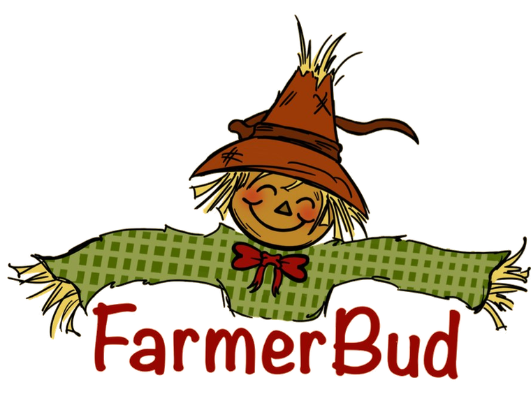

What is your location?
Click on your field
Coordinates
Additional info:
-
pH
The best crops for your field!
Your type of soil:
Your geographical area:
Average 2006-2025 · source: NASA POWER

Are you a small farmer in the Po Valley and don't know where to start? FarmerBud has got your back!
This AI Agent will guide you through the crop options, recommending the best one for your soil.
Let's startClick on your field
Average 2006-2025 · source: NASA POWER